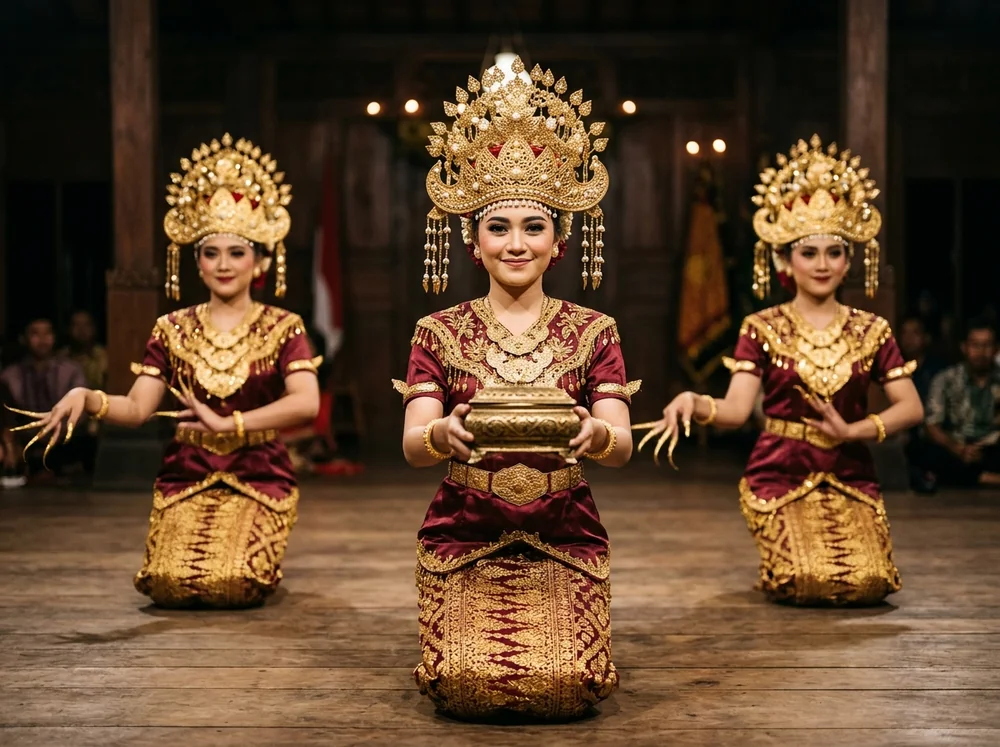
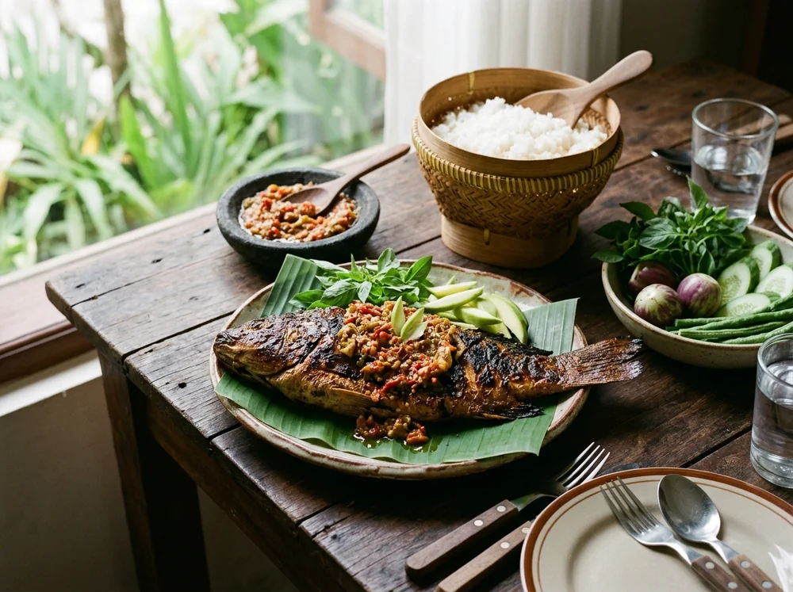

Portal budaya & kuliner Lampung
Sai Bumi Ruwa Jurai.
Satu bumi, dua jurai, dan ribuan cerita yang tumbuh di antaranya. Ruwa Jurai mengajakmu menyusuri adat, rasa, bahasa, dan wajah lima belas kabupaten/kota Lampung—dengan hormat pada pemilik ceritanya.
Selamat datang
Bukan sekadar katalog.
RUWA · JURAI
Ruwa Jurai adalah ruang cerita untuk mengenal Lampung tanpa membuatnya membeku dalam satu gambar.
Kami merangkum adat, kuliner, bahasa, dan warisan dari 15 kabupaten/kota—lalu menandai apa yang masih perlu ditanyakan. Sebab Lampung bukan satu suara: ada Saibatin di pesisir, Pepadun di pedalaman, Melinting di timur, dan banyak komunitas lain yang saling bersinggungan.
Di sini, belajar bisa lewat membaca, menjelajah peta, menulis aksara, atau bermain. Semuanya dirancang untuk membawamu pulang dengan satu pertanyaan baru.
01 — Pintu masuk
Pilih jalanmu menuju Lampung.
Tiga cara memulai: membaca cerita, mengecap rasa, atau melihat keterhubungan wilayah. Tidak ada urutan yang salah.
Lihat peta jelajah
Adat &
cerita
Dari Piil Pesenggiri sampai Sekura: 22 entri yang dibaca pelan-pelan, bukan dihafal cepat.

Rasa &
dapur
Seruit, pindang baung, gulai taboh—sembilan hidangan dengan cerita, bahan, dan resep yang bisa dicoba.

Wilayah &
jejak
Jelajahi 15 kabupaten/kota dengan batas wilayah resmi, lalu temukan cerita di tiap sudutnya.
Sorotan
Cerita yang layak singgah.
Kenalan dengan pemandumu
Sai, gajah kecil
yang ingin tahu.
Sai membawa siger di kepala, tapis di badan, dan tangan yang selalu terbuka. Ia bukan ahli warisan—ia teman belajar yang rajin bertanya. Nama “Sai” adalah nama kerja dan masih terbuka untuk dikoreksi bersama pemilik tradisi.
Dari dapur Lampung
Satu piring,
semua cerita.
Seruit adalah ikan, sambal, dan buah asam yang diaduk jadi satu. Ia tidak disajikan untuk satu orang: piringnya lebar, duduknya melingkar, dan ceritanya biasanya lebih panjang daripada waktunya.
02 — Konteks
Waktu yang membentuk Lampung.
Ini tematik, bukan kronologi lengkap. Sebuah pengingat bahwa budaya selalu bergerak—termasuk saat kita sedang menuliskannya.
Garis waktu lengkapAgenda
Yang sedang berlangsung.
Tanggal bersifat perkiraan dan dapat berubah. Selalu konfirmasi kepada penyelenggara atau pemangku adat setempat.
Bawa pulang ceritanya
Budaya bukan latar.
Ia cara kita hidup bersama.
Gunakan Ruwa Jurai untuk belajar, mengajar, atau merancang karya—dengan menyebut sumber dan menghormati pemilik tradisi. Setiap cerita punya rumah.